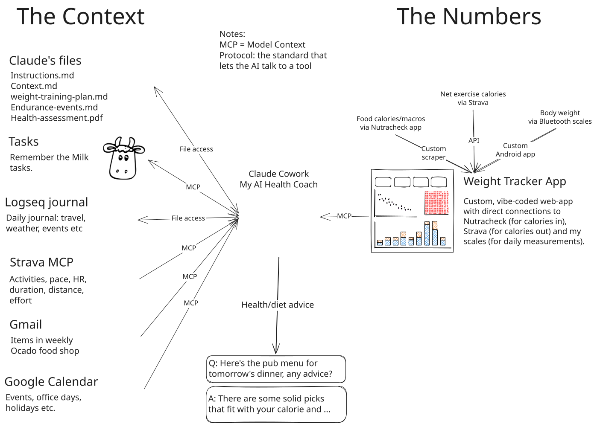

Vibe-coding a weight-loss coach
What started as a spreadsheet replacement for tracking my weight loss, became a health coach who would advise me on nutrition, exercise, and lifestyle changes. In this article I’ll explain what AI and I built, and what the results were.
Background
Giving up smoking is the easiest thing in the world. I know because I’ve done it thousands of times
—Mark Twain… maybe (commonly attributed to Twain, but not securely sourced)
What Mark Twain once said about quitting smoking, I can say about dieting. I’ve become quite adept at losing 7–14 kg over a period of 7–20 weeks—unfortunately I’m also quite adept at putting it back on, typically over December (I do have a plan to NOT put it back on this year, but that’s not what this article is about).
The result of this annual cycle is that I now—in my 50s—have a pretty good idea how to effectively lose weight. And after 30 years of “practice”, this year (with the help of AI) I decided to perfect the process by going all in on the tracking and analytics side of things.
Typically I’d create a tracking spreadsheet that I’d use to record my calories consumed (via a food tracking app like MyFitnessPal or Nutracheck) and measured body weight. This year, I decided to take it a step further and build a more sophisticated solution.
I had a Claude Pro (£18pm) subscription at my disposal, so I decided to see if AI could help me create something better. I’d already used AI to create quite a few web dashboards, and my first thought was to simply create a direct replacement for the usual tracking spreadsheet, but as is often the case with AI, I had underestimated just how helpful it could be when helping with a project, I was keeping it too restrained.
What started as a simple dashboard requiring manual inputs (not unlike the previous spreadsheets) grew into a data-viz-heavy web app with fully automated inputs and a direct connection to Claude Cowork via an MCP server. AI wasn’t just helping me build the app anymore—it was answering my health- and diet-related queries directly, using the app’s data as its primary source.
What AI & I built
I’m not going to go through the whole build journey, as I suspect this article is going to be on the long side anyway, so I’m going to simply describe the final solution.
The solution is a two-part system: a quantitative core (The Numbers) that tracks calories in, calories out, and body weight (this is the web app I mentioned above, and it’s shown on the rightat the top in the diagram below), and a qualitative layer (The Context) that provides context for those numbers. The quantitative core is a custom web app that unifies three data feeds (Nutracheck, Strava, and Bluetooth scales) and computes the physics of weight loss. The qualitative layer is an AI health coach that connects to the quantitative core and other context sources (Logseq journal, Gmail, Google Calendar) to provide personalised advice.

The Context
The qualitative layer—the sources that explain why the numbers moved. Most are read-only; three (marked ↔) are ones the coach also writes back to.
Claude’s files File access ↔
A small set of Markdown and PDF files that give the coach its standing brief: Instructions.md (how to behave and format things), Context.md (who I am, my routine, office locations, equipment), weight-training-plan.md and Endurance-events.md (current training), and Health-assessment.pdf (baseline health). They’re read straight off disk every session. It’s a two-way link—the coach can edit these too—so the system quietly refines its own instructions over time.
Tasks—Remember the Milk MCP ↔
My existing task manager, connected through its MCP. The coach reads what’s on my plate for context, and creates tasks back into it. Typically, after discussing a topic with the coach, I’d then ask it to add a related task to the app. e.g. order oats on Friday, research creatine supplements, order HR chest strap etc.
Logseq journal File access ↔
My daily journal, one Markdown file per day, read directly from the folder. This is the single richest source of context: travel, weather, illness, social events, who I was with, what I was building—all the real-world detail that explains a surplus Saturday or a missed weigh-in. The coach writes back here too, maintaining a dedicated Diet-2026 page and logging entries, so the journal is both an input it reads and an output it keeps up to date.
Strava (detailed) MCP
Separate from the calorie figure on the Numbers side, the Strava MCP lets the coach open up an individual activity—pace, heart-rate streams, distance, elevation, segments, effort. Note: it’s read-only, and requires a paid subscription to access.
Gmail MCP
Connected via the Gmail MCP, scoped narrowly to my weekly Ocado shop confirmation—so the coach can see what food is actually coming into the house that week when it suggests meals. Read-only.
Google Calendar MCP
Read through the Calendar MCP for events, office days, and holidays. Knowing I’m in the London office on Thursday, or away for a weekend, lets the coach plan around the days where eating is harder to control. Deliberately read-only—it reads my schedule, it never books anything.
The Numbers
The quantitative core—calories in, calories out, and body weight—all funnelled into one custom app that does the physics, then exposed to the coach through a single connection.
Nutracheck—food Custom scraper
My food diary lives in Nutracheck, which has no public API (as best I can tell there are no user-friendly food tracking apps that offer API/MCP access to the data, I have “views” on this), so a custom scraper logs in and pulls each day’s calories, macros (protein, carbs, fat, fibre) and the full meal-by-meal breakdown. This is the “calories in” half of the equation.
Strava—net exercise calories API
Strava’s official API feeds the calorie cost of every logged activity into the tracker—the “calories out” that turns a day’s intake into an actual deficit or surplus. (The same service is used twice by design: here as a single calorie number, and on the Context side for the detailed session data.)
Body weight—Bluetooth scales Custom Android app
A custom Android app (MiScaleReceiver) I built catches the reading from my Bluetooth scales and posts it straight to the tracker each morning, so the daily weigh-in is captured with no manual entry. This is the third input: the actual bodyweight the model checks its predictions against.
Weight Tracker App MCP
A custom, vibe-coded web app running on my NAS that pulls those three feeds together and does the real work: daily and cumulative deficit, estimated TDEE and BMR, and an exponentially-smoothed trend weight that sees through daily water-weight noise. It’s the single source of quantitative truth—and it’s exposed to the coach through its own MCP, so Claude can ask for a day’s log, an overview, or a weekly summary and reason over clean, computed numbers rather than raw scrapes.
This is covered in more detail in the next section.
The Weight Tracker app
The quantitative heart of the whole setup: a custom web app that unifies three data feeds, does the calorie physics, and hands clean numbers to the coach. Everything else is context around this.
How it was built
It’s a vibe-coded web app—built conversationally with AI rather than hand-written line by line—running as a Docker container on my home NAS, managed through Portainer. It started life as a way to stop screenshotting the Nutracheck table into chat, and grew into the single source of truth for the diet. Because it’s mine, I can bend it to exactly how I think about the problem rather than living inside someone else’s app’s assumptions.
The three feeds it unifies
Its core job is to pull three otherwise-disconnected data sources into one daily row:
- Calories in—scraped from my Nutracheck food diary, including full macro and meal-level detail.
- Calories out—the energy cost of every activity, straight from the Strava API.
- Body weight—my morning weigh-in, posted automatically from the Bluetooth scales by a small Android app I built.
The physics it computes
From those inputs it derives the numbers that matter, per day and cumulatively:
- BMR and TDEE—my resting burn, scaled by a sedentary multiplier (×1.38) and topped up with the day’s actual exercise, to estimate total energy expenditure.
- Daily and cumulative deficit—intake versus expenditure, and the running total (which reached ~57,000 kcal by target).
- Trend weight—an exponentially-weighted moving average (α = 0.15) that smooths out daily water-weight noise, so a single heavy meal or a skipped weigh-in doesn’t spook the line. This, not the raw scale, is what progress is judged against.
- Projection—a running estimate of when the target weight would be reached, based on the recent pace.
Seeing the data
The front end is built around the things I actually care about: a weight time-series with the trend line drawn through it, a calorie-deficit heatmap, weekly deficit bars, and macro breakdowns—all the design-and-dataviz side I enjoy. It also exposes weekly summaries (each Monday-to-Sunday block, matching the heatmap) and an at-a-glance overview: latest weigh-in, current trend, cumulative and average daily deficit, and progress to target.
How I reach it—and how the coach does
The app is published to the open web through a Cloudflare Tunnel, gated by Cloudflare Access so only I get in (Google sign-in, with a one-time passcode as a fallback). That means I can log or check it from anywhere, including a work laptop, without opening my home network. The coach reaches the same data through the app’s own MCP, calling for a day’s log, a weekly summary, or the overview—so it reasons over clean, computed figures rather than raw scrapes.
The maintenance twin
As I crossed from losing to holding, I forked a maintenance version onto its own branch and deployed it alongside the original as a parallel stack, so both run side by side. It’s reframed around a different goal: instead of driving down to a target and projecting a finish date, it shows a band gauge (holding 63 kg ± 1 kg) and a weekly rate-of-change, with the calorie goal auto-derived from recent TDEE as “maintenance calories.” Same underlying physiology model, different question—am I holding station? rather than how fast am I losing?
Some example exchanges with my AI coach
A few sample exchanges from the running conversation I’ve had with the coach over the past few months.
How was my total calorie deficit structured?
Your total logged deficit was 57,141 kcal (equivalent to 7.42 kg of fat), split between movement and diet:
Movement—39,300 kcal (68.8%)
- Walking: 22,592 kcal (39.5%)—75 walks, 434 km
- Rides: 5,890 kcal (10.3%)—8 rides, 300 km
- Runs: 4,480 kcal (7.8%)—16 runs, 72.5 km
- Strength: 3,281 kcal (5.7%)—19 sessions
- Rowing: 3,057 kcal (5.3%)—9 sessions, 55 km
Diet—17,841 kcal (31.2%)
Eating below your sedentary burn (avg intake 1,816 kcal vs ~2,015 kcal sedentary TDEE).
The standout: walking alone (22,592 kcal) outweighs the entire dietary contribution (17,841 kcal)—one habit, done almost every day, did more work than every calorie you ever skipped at the table combined.
Are there any diet days that stand out as being “problematic”?
Across the full 93-day diet, only two kinds of days really stand out as problematic—and only one of them is actually worth worrying about.
The genuine flag: two “surplus + high-fat” restaurant days
- 6 Jun (Sat)—pub walks and dinner with neighbours: 2,725 kcal, 92.8g fat, +284 kcal surplus
- 20 Jun (Sat)—Penny’s birthday play in London: 2,561 kcal, 88.2g fat, +453 kcal surplus
- 11 Jul (Sat)—in-laws in Evesham: 2,546 kcal, 94.7g fat, +559 kcal surplus, your single worst day of the whole diet
These three share a pattern: all Saturdays, all social/restaurant occasions, all fat-driven rather than just “too much food.” None of them derailed anything—each was followed by a normal deficit day and the trend kept falling regardless. If there’s a real lesson here it’s that Saturday-away-from-home is your one recurring risk day, not that anything went wrong.
Not actually problems, despite looking alarming at first glance:
- The Kirkby Lonsdale holiday days (25–29 May) show up repeatedly in the “low protein” and “low fibre” flags—but that’s a 5-day hiking holiday with 14–16km hill hikes and 3,235 kcal on the biggest day. That’s context, not carelessness; you were fuelling serious effort in a place without your usual meal planning.
- Several “huge deficit >1,000 kcal” days (20 Apr, 13 Jun, 3 May) look like under-eating red flags on paper, but every one of them pairs with 600–1,060 kcal of logged exercise on the same day—they’re big activity days, not starvation days. That’s exactly the kind of pattern the maintenance plan already tells you to watch for going forward (unplanned deficit from a heavy training day, not a diet mistake).
- The low-fibre days cluster almost entirely around restaurant/pub meals and hiking days—again, circumstance rather than a habit to fix.
Bottom line: across 93 days, there isn’t a stretch of consecutive bad days or a slow drift into bad habits—just three isolated, explainable Saturday blowouts, all absorbed without consequence. If I had to give you one thing to watch for next time, it’d be: pre-plan Saturday-away meals a little, since that’s the one day-type that repeatedly produced your only three surplus days of substance.
Look at my food choices while on the diet, anything I should change once I move towards maintenance?
Looking back at the pattern across all 93 days, the eating system itself was genuinely well-designed—repeatable, protein-forward, and it clearly worked. But a few things were shaped specifically by being in a deficit, and now that you’ve got ~400 extra calories to work with, they’re worth revisiting rather than just carrying forward unchanged.
Fibre was consistently under target, and it’s an easy fix now. Average across the diet was 26.7g against your own 30g target, and it dipped below 20g on 13 separate days—nearly always driven by restaurant meals, pub lunches, or hiking days rather than home cooking. With 400 more calories to spend, this is the cheapest win available: an extra piece of fruit, a bigger veg portion, or swapping white basmati for brown on a home dinner closes the gap without any real sacrifice.
The protein-bar reliance was a deficit-era crutch worth trimming. You cycled through five different bars (Grenade, Fulfil, Nick’s ×2 flavours, plus Graham’s protein pot)—sensible when you needed dense protein at low calories, but now that you have calorie headroom, whole-food protein (eggs, fish, dairy, chicken—all things you already eat well at lunch) delivers the same protein with better satiety and more micronutrients. I wouldn’t cut the bars entirely—they’re genuinely useful for hitting 140g on a busy day—but if 2–3 a week became 1, that’s a reasonable maintenance shift.
Vegetable variety was narrow. The dinner side was almost always broccoli, Chantenay carrots, or the salad trio (cherry tomatoes, rocket, cucumber). Nutritionally fine, but a diet you’re going to run for years benefits from more rotation—different colours, different micronutrients. Easy to fold into the same chilli/balti/burger dinner rotation without changing the system, just varying what sits alongside it.
Alcohol and treats were already well-calibrated—don’t change this. Wine on 21 evenings (usually 125–250ml), low-cal beers, the occasional brownie or Biscoff—all logged, all portioned, never derailing anything. This is exactly the kind of sustainable moderation a maintenance phase should keep, not tighten or loosen.
Breakfast doesn’t need to change at all. The overnight oats on 63 of 93 days was your best-performing habit—no decision fatigue, consistent macros, good fibre contribution (9.2g on its own). Keep it exactly as is.
If I had to rank these: fix the fibre gap first (it’s free calories doing useful work), then gradually lean the snack slot toward whole food rather than bars, and use the extra maintenance calories to add vegetable variety rather than just more of the same foods in bigger portions.
Give me an assessment of last Tuesday
Tuesday 16 June—London Wall office day
Nutrition: 1,524 kcal | 128.4g protein | 656 kcal deficit
A well-managed day given the constraints. Three things to note:
- Breakfast—you used the M&S pre-made Apple Crumble Overnight Oats (312 kcal, 19g protein) rather than your homemade version (328 kcal, 26g protein). Convenient for an early office start (Jake dropped you at Theale at 6:15am), but it cost you ~7g protein at the most important meal of the day. Worth batch-prepping your own the night before on office days if possible—the difference compounds across the week.
- Lunch (restaurant—new starter)—Salmon + mash + wakame seaweed + olive oil, ~601 kcal. Decent restaurant choice: salmon is an excellent protein source, seaweed is a strong gut health and micronutrient pick, and the portion looks reasonable for a restaurant. The mash with olive oil is the main calorie contributor but not unreasonable. Controlled eating out.
- Snack—25g beef biltong on the train: 60 kcal, 13g protein. Perfect office/travel snack. High protein, portable, no refrigeration needed.
- Dinner—Chilli ⅙ + kidney beans + broccoli + basmati rice: 371 kcal, 26.8g protein. The batch cook from Monday paying dividends—minimal effort, solid macros.
- Supper—Biotiful Kefir Protein Cherry 250g: 180 kcal, 26.5g protein. Smart call here. This single item dragged total protein from ~102g to 128g and added live cultures. That supper habit is doing real work on days when lunch is restaurant-unpredictable.
Fibre at 26g was the only real shortfall—office days will always struggle here.
Exercise: 3.5km run, 18 mins, 189 kcal
The dominant story of the day. Meant to be a 5km effort run, cut short at 3.5km when the calf went tender. Your journal noted it “wasn’t quite the soleus strain I had before”—different site or character—which is marginally reassuring, but you were right to stop immediately rather than push through. Given the JPMorgan race was 15 days away at that point, preserving the calf mattered more than the session.
Overall: A disciplined office day with good damage limitation on the food side. The calf is the only real black mark, and that’s not a nutrition or discipline failure—just bad timing. Deficit of 656 kcal on a day with minimal exercise is a good outcome.